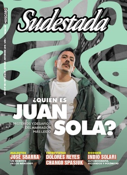

Buscar
Edición N° 158
Septiembre-Octubre-Noviembre 2019
Revista bimensual
Comprar edición impresaSumario
- ¿Quién es Juan Solá?
- Perdieron
- “La cultura rock ya no significa nada”
- Sin laburo
- Viaje al corazón de la rebeldía Mapuche
- “El poder de las mujeres pasa por la destrucción del orden”
- Celeste Clandestino
- Un triunfo mutante. Un balance después de las PASO
- Ni una jubilada menos
- “Me interesa darle lugar al delirio”
- “Plantearme nuevos desafíos es mi manera de mantenerme sano”
- José Sbarra en los márgenes
- Apuntes sobre el incumplimiento de la Ley de Identidad de Género
- “Los nietos vamos a seguir con esta lucha”